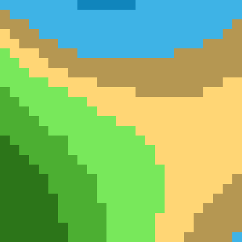
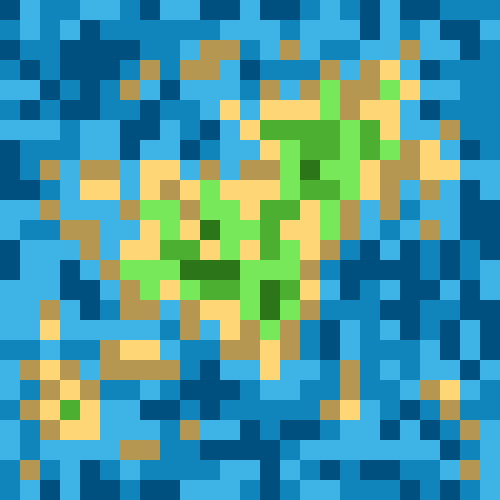
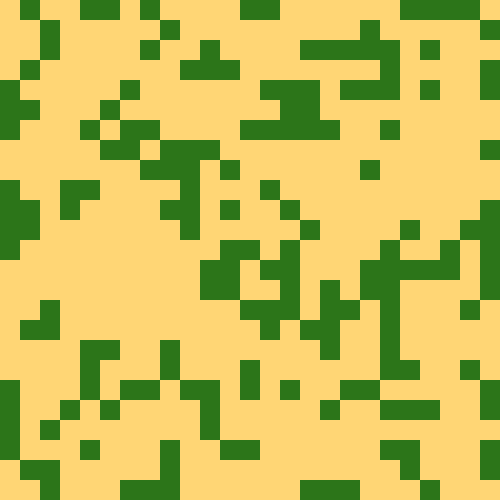

For my Bachelor's thesis I built a modular toolkit for procedurally generating 2D tile-based maps, and ran a scientific comparison of three generation methods:
- Multi-Layered Cellular Automata (MLCA) — rule-based and iterative
- Perlin Noise — stochastic and continuous
- Wave Function Collapse (WFC) — constraint-based and structured
The backend runs in Go, with an interactive browser frontend in JavaScript. Key metrics — entropy, clustering, autocorrelation and frequency distribution — are analysed in real time.

To keep the methods comparable, every algorithm works on standardised input (25×25 grids, 8 terrain types, fixed seeds), evaluated across seven quantitative metrics for diversity, coherence and structural complexity.

Each method has its strengths: MLCA offers fine control, Perlin produces natural transitions, and WFC yields the most varied results — at a higher computational cost. Hybrid combinations show strong potential.

The result is a reproducible framework for evaluating and comparing procedural generators, with visual output, interactive tooling and full documentation.
